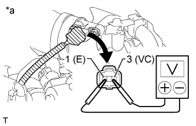
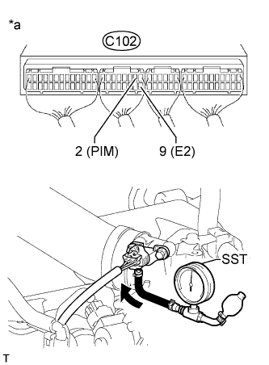

ДАТЧИК АБСОЛЮТНОГО ДАВЛЕНИЯ В КОЛЛЕКТОРЕ > ПРОВЕРКА БЕЗ СНЯТИЯ С АВТОМОБИЛЯ |
| 1. INSPECT MANIFOLD ABSOLUTE PRESSURE SENSOR |
Inspect the power source voltage.
Disconnect the manifold absolute pressure sensor connector.
|  |
Measure the voltage according to the value(s) in the table below.
| Tester Connection | Switch Condition | Specified Condition |
| C83-3 (VC) - C83-1 (E) | Ignition switch ON | 4.75 to 5.25 V |
| *a | Front view of wire harness connector (to Manifold Absolute Pressure Sensor) |
Connect the manifold absolute pressure sensor connector.
Check the power supply.
Turn the ignition switch to ON.
Disconnect the vacuum hose from the manifold absolute pressure sensor.
|  |
Using SST, measure the voltage according to the value(s) in the table below.
| Tester Connection | Condition | Specified Condition |
| C102-2 (PIM) - C102-9 (E2) | 60 kPa (0.61 kgf/cm2, 8.7 psi) | 0.4 to 0.6 V |
| 87 kPa (0.89 kgf/cm2, 12.6 psi) | 1.1 to 1.3 V |
| *a | Component with harness connected (ECM) |